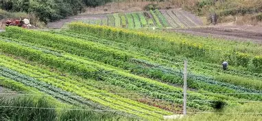
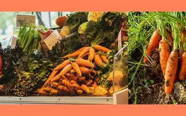

About EcoFresh Organics
Our Story
EcoFresh Organics was founded in 2020 with a mission to make organic, healthy, and sustainable food available to every household. What started as a small family project has grown into a trusted organic brand serving communities across South Africa.
Our Mission
We believe that healthy people come from healthy food, and healthy food comes from healthy soil. Our mission is to provide 100% organic produce that is free from harmful chemicals, while supporting local farmers and eco-friendly practices.
Our Values
- Sustainability – protecting nature for future generations.
- Community – supporting local farmers and families.
- Health – delivering nutritious and chemical-free products.
- Trust – transparent and honest farming practices.
Meet Our Team
Behind EcoFresh Organics is a passionate team of farmers, nutritionists, and eco-advocates who believe in creating a healthier lifestyle.
